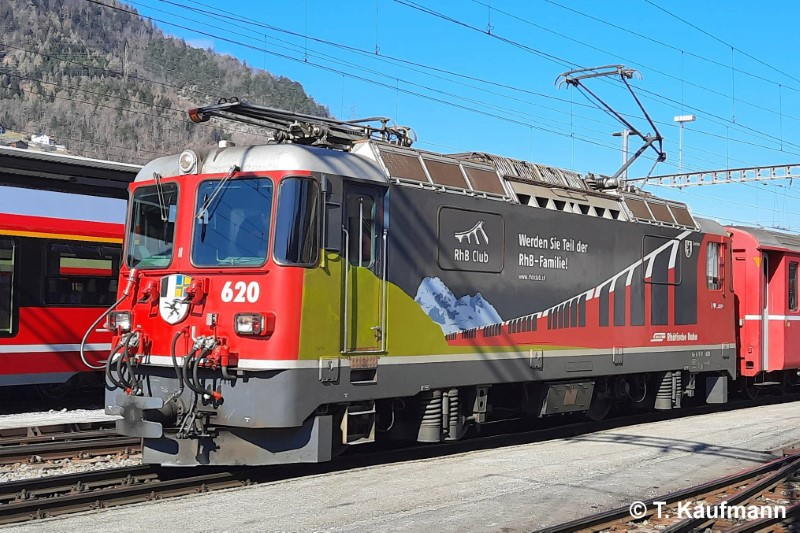
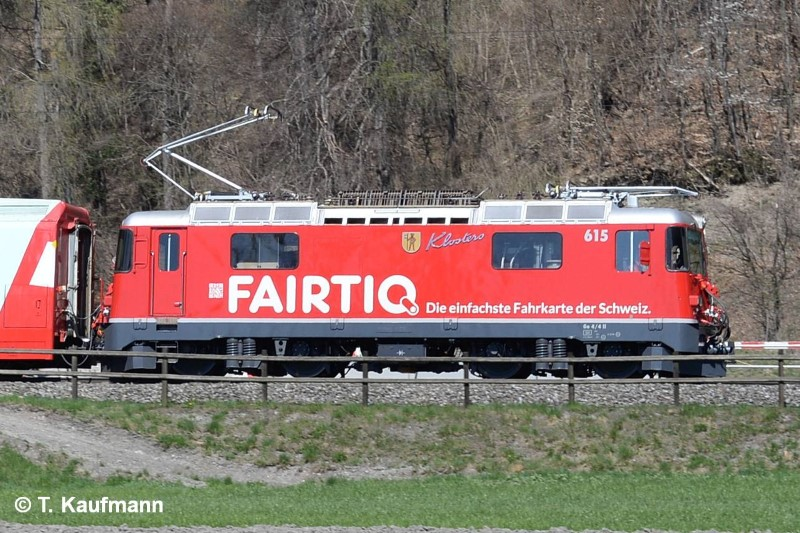

Allgemein
| Baujahr | 1973 |
| Einsatz | StN, ChA |
| Antriebstechnik | Thyristor-Anschnittsteuerung |
| Leistung | 2300 PS / 1700 kW |
| Ergänzungsbremse | elektrische Bremswiderstände |
Technische Daten
| Geschwindigkeit | 90 km/h |
| Länge | 12.96 m |
| Gewicht | 50 t |
| Bremsgewicht | 50 t |
| Feststellbremse | H 42 kN |
Fahrzeugausrüstung
| Nylatron-Pufferplatten | keine |
| Vielfachsteuerung | WTB-Zugbus (MZST) |
| Zugbeeinflussung | ZSI 127 |
| Heizleitung | StN |
| Speiseluft-Leitung | ja |
| Bremssystem | Druckluft-Hauptleitung (Dual-Bremse) |